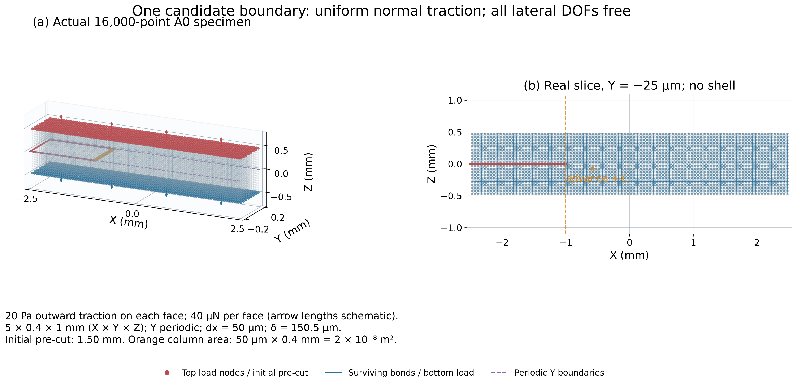
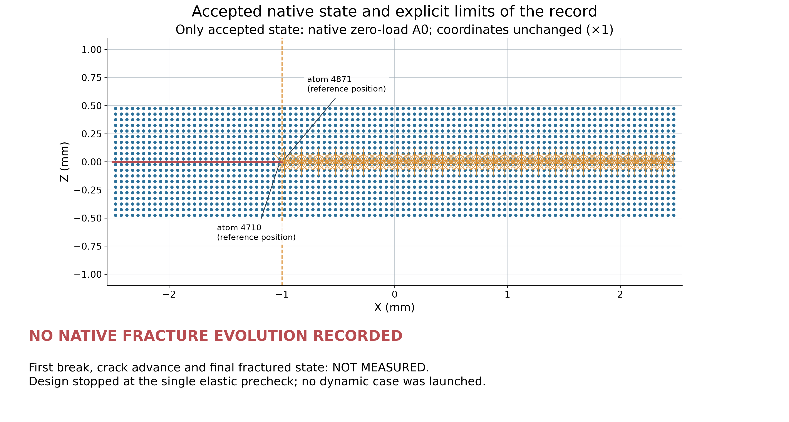
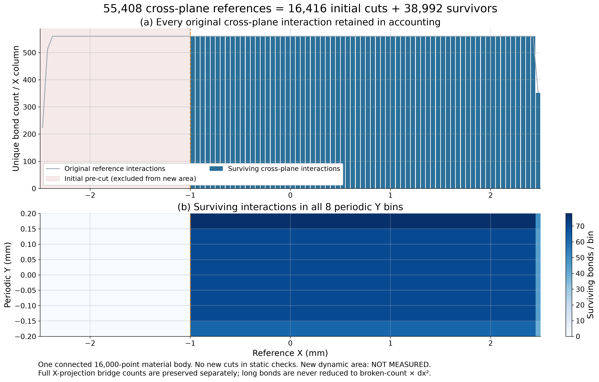
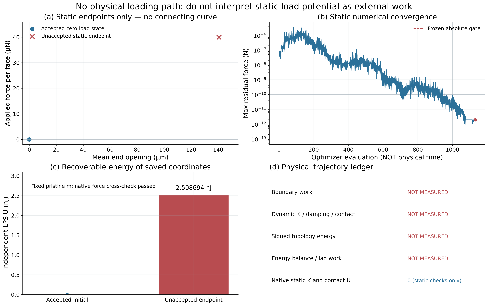
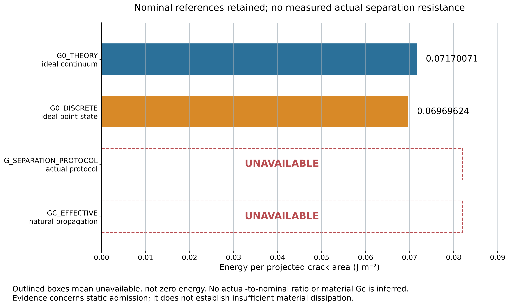
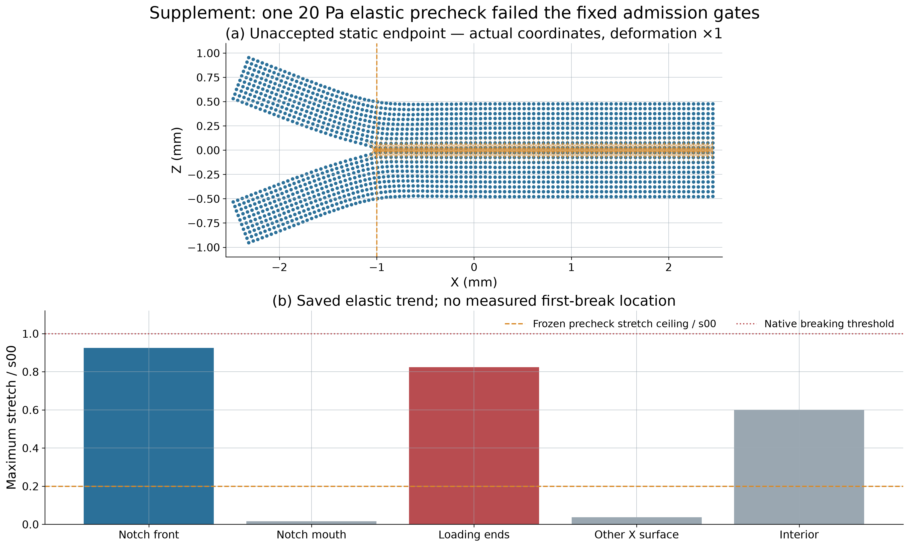

Run 20261012T230100Z。20 Pa 分布牵引预检：最大伸长 0.138705（门槛 0.03）；最大残余力 1.954×10⁻¹² N（门槛 1×10⁻¹³ N）。正式原生断裂算例 0。GC_EFFECTIVE = UNAVAILABLE，不是零。
已核对原生零载平衡、固定参考m和独立力；未认证20 Pa端点为平衡态。优化迭代不是物理时间，静态势能不是路径外功。





